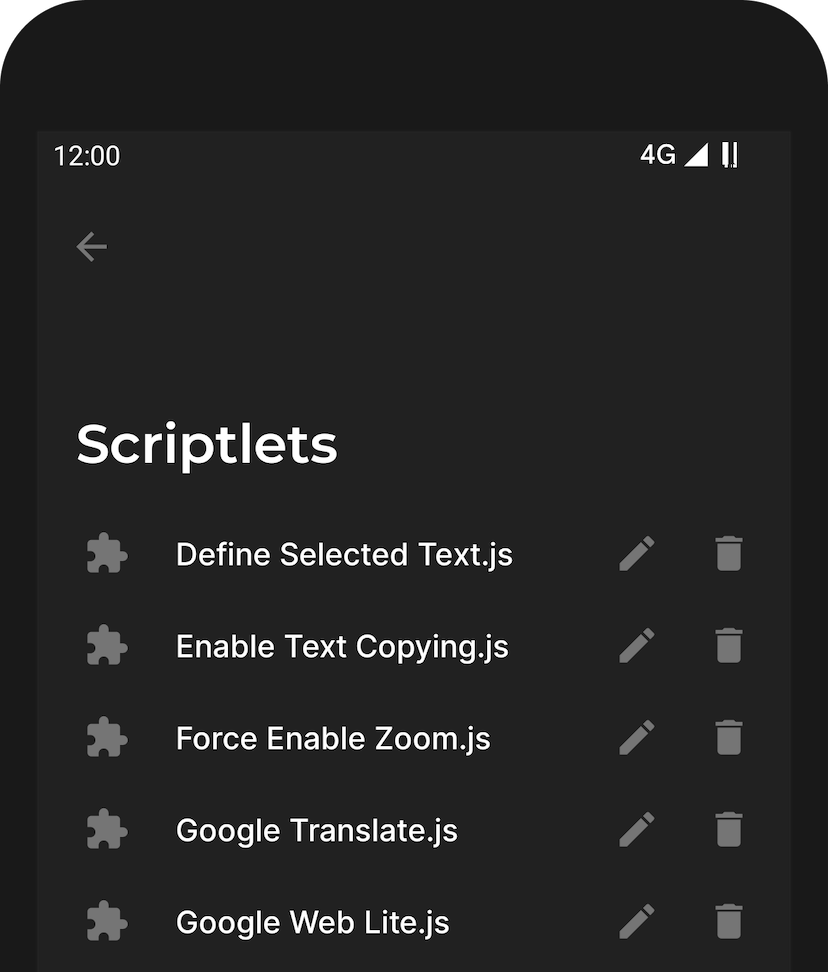
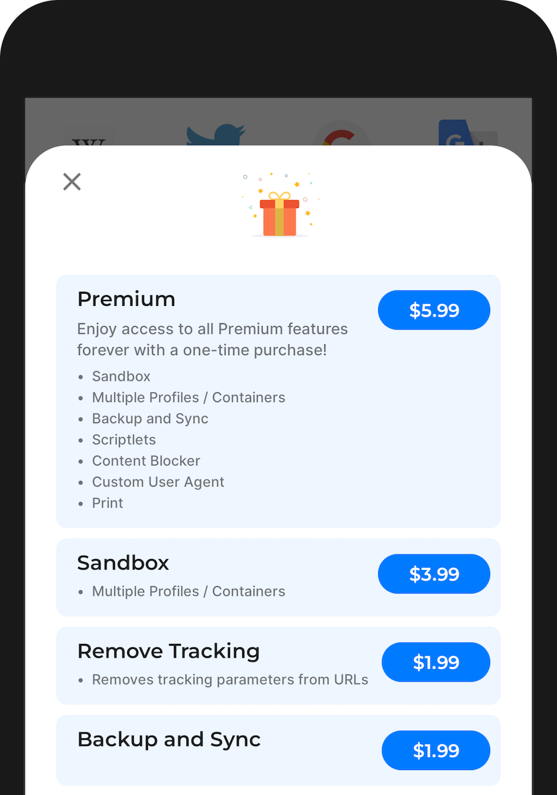

把 Hermit 翻了个底朝天：五个藏得最深的功能
你以为 Hermit 只是把网站包装成独立 App 的壳？其实它还藏着永久隐身沙盒、站点级精细配置、本地恶意域名拦截等一系列大多数人没发现的隐私武器。
你以为 Hermit 就是一个把常逛网站包成独立图标放桌面的壳？打开、收藏、换图标——差不多就这样了吧。我一开始也是这么想的，直到把设置面板翻了三圈，才发现这玩意儿藏得比洋葱还深。
Hermit 的定位其实是「隐私优先的轻应用浏览器」，但官网没把这些进阶功能列成显眼的卖点。它们就躺在各轻应用的设置深处，等着愿意折腾的人一个个挖出来。下面说的五个功能，每一个都让我觉得「这才是 Hermit 真正想卖的东西」。
第一个：永久隐身沙盒——不是临时的，是物理隔离的
普通浏览器的无痕模式关了窗口就清零，Hermit 的沙盒可以配置成永久隐身。什么意思？每次打开都是全新身份，跟你其他轻应用的 Cookie、本地存储物理隔离，互相看不见。
想折腾这些隐私玩法的话，先从官方下载装一个吧。这个功能藏在每个轻应用的「More Settings」里，选一个沙盒颜色就绑定上了。每个沙盒有独立颜色标记，方便你一眼认出哪些站点跑在哪个沙盒里。
具体场景一想就明白。Facebook、X、TikTok 网页版、Amazon 未登录状态——这些都是追踪激进型网站。你在 Chrome 里装 uBlock Origin + Privacy Badger + Decentraleyes，看似全覆盖，实际上追踪是多层的：拦截器挡不住网站本身的 Cookie、挡不住 ETag 缓存追踪、挡不住 Canvas 指纹。而沙盒做的是更底层的隔离：哪怕你漏装了某个拦截器，沙盒本身就是一道物理墙，这些网站的 Cookie 根本碰不到你正常浏览的 Cookie。
代价是配置完需要完全重启轻应用——从系统最近任务列表划掉再打开，新沙盒才生效。官方 Help 文档里特意提了这个步骤，很多人卡在这里以为功能没生效。

第二个：每个网站一套独立配置——不是全局开关，是精细控制
传统浏览器的设置是全局的——Chrome 关了第三方 Cookie，全站都关；Firefox 开了桌面模式，全网站都是桌面版。Hermit 的配置模型完全反着来：每个轻应用有自己独立的一套配置。
我给你列几个我实际用到的场景：知乎开大号字体，B站保持默认；Twitter 关第三方 Cookie 防追踪，Reddit 继续开着不然没法登录；微信公众平台强制桌面模式，知乎还是移动版；豆瓣开暗色模式，小红书保持明亮。这些设置互相之间完全不干扰。
几乎所有配置项都是按站点独立的：弹窗拦截、第三方 Cookie、桌面模式、暗色模式、文字大小、主题、下拉刷新、甚至用户脚本的启用状态。只有一个例外——内核版本是全局共用的，因为 Hermit 用的是系统 WebView，没法给每个轻应用配不同内核。
这个设计理念很有意思。Hermit 团队的想法大概是：既然你把每个网站都当成独立的「轻应用」来用，那它就应该有自己独立的设置，而不是被全局设置绑架。代价是第一次上手的时候需要逐个调——某些网站默认拦截弹窗就登不上，你得进 Quick Settings 把那个网站的弹窗拦截单独关掉。但默认配置（隐私优先、弹窗拦、第三方 Cookie 关）对大部分网站已经够用了，只有遇到问题才需要逐个调。

第三个：本地恶意域名拦截——不上传你的浏览 URL
Hermit 功能页列出了「Malware Protection」作为隐私能力，但没说它和 Chrome 的安全浏览有什么区别。我去翻了Hermit文档才搞清楚——这个保护来自内容拦截器里的本地恶意域名列表，当你访问被标记为恶意的网站时，Hermit 提前拦截并提示风险。
关键差异在这里：Chrome 是把 URL 发给 Google 服务器做实时查询，Hermit 是用本地列表做本地匹配。这意味着 Hermit 的检测可能不如 Chrome 实时，但好处是不把你的浏览 URL 发给任何服务器。从隐私角度看，这反而更干净——毕竟 Google 安全浏览服务器会记录查询时间戳和 IP 地址。
Hermit 团队在一篇 blog 里专门解释过为什么这么设计：他们认为把用户的浏览行为传给任何第三方都是不可接受的，哪怕是为了安全检测。本地列表虽然更新频率不如云端，但胜在零上报。
第四个：三个隐藏的登录修复开关——90% 的登录问题调一调就好
Hermit 的默认设置偏紧，很多人第一次用会遇到某个网站登不上的问题。官方文档给了三个最常见的修复方案，按出现频率排序，全部藏在每个轻应用的 Quick Settings 里：
关掉弹窗拦截——OAuth 登录（Google、Facebook 登录按钮需要弹一个小窗口）的流程依赖弹窗，Hermit 默认拦截导致卡住。进 Quick Settings 关掉，登录完再打开就行。
开启第三方 Cookie——很多网站用第三方 Cookie 做跨域登录验证（A 网站通过 B 网站的 Cookie 验证身份），Hermit 默认关了导致验证失败。临时开启，登录完可以再关掉（Cookie 还是保留，只是新的第三方请求不再写 Cookie）。
Google 登录切回移动模式——某些情况下用 Desktop Mode 强制桌面版访问 Google 登录页会出奇怪问题。如果前两个开关都试过还是登不上，试试关掉 Desktop Mode。
还有几个冷门情况：银行、支付这类安全敏感网站的登录流程涉及多个页面跳转，每个跳转都可能被 Hermit 的某种默认设置挡掉。这种情况下把 Quick Settings 里所有隐私开关临时都关掉，完成操作后再逐个恢复。第三方密码管理器（比如 1Password）在 Hermit 的 WebView 里可能不兼容，Google 的 AutoFill 通常没问题。
第五个：WebView 崩溃保护——99.8% 无崩溃率怎么来的
Hermit 基于 Android System WebView 而不是自嵌 Chromium，这点其实是它的设计优势。好处是 WebView 跟系统一起自动更新安全补丁，不用 Hermit 自己维护渲染引擎版本。坏处是安全能力取决于 WebView 本身能提供什么。
但 Hermit 团队在这个基础上做了两层额外保护。第一层是崩溃保护——WebView 进程崩溃时，Hermit 不闪退主应用，而是优雅地提示刷新页面或重启轻应用。官方 Help 文档给出的数据是 99.8% 的无崩溃率。
第二层是架构设计：每个轻应用是独立进程，一个崩了不影响其他；只实现必需的浏览器功能，不做花哨但易出错的扩展。Chimbori（Hermit 开发团队）专门写过一篇 blog 解释"how does Hermit reduce crashes"，核心思路就是「渲染崩溃概率最低的选择 + 物理隔离 + 优雅降级」。
最后说一个坑
Hermit 的安全性最终建立在 WebView 的基础上。如果你的手机提示有 Android System WebView 更新，一定要更——WebView 版本落后，Hermit 的那层额外保护再强也挡不住底层漏洞。这点在 Help 文档里有专门一节叫「如何以及为什么更新 Android WebView」，翻译过来就是：始终让 Android WebView 保持在最新版本，这才是真正的安全补丁。
还有一点：沙盒配置完必须完全重启轻应用（从系统最近任务划掉再打开），只在应用内刷新不生效。我第一次配的时候就是在应用里刷新，以为功能坏了，白折腾了十分钟。
Hermit 的官网和文档对这些隐藏功能的描述其实都在，只是没有用加粗、高亮的方式突出。你得真的去翻——每个轻应用的设置面板、More Settings 里的沙盒选项、Quick Settings 里的弹窗拦截和第三方 Cookie 开关——这些东西串起来才是 Hermit 真正的产品形态：不是一个套壳工具，而是一套完整的隐私浏览器方案，把每个网站独立成沙盒，给每个沙盒配精细的隐私策略，同时用本地拦截和崩溃保护做底层兜底。
上面这五个功能，每一个都能单独拿出来当卖点，但 Hermit 偏不。它就把它们藏在设置深处，等着愿意多花五分钟翻设置的人发现。关于这些功能的更完整资料，在GitHub、Gitee、GitCode三处都有备份，国内网络挑哪个方便就用哪个。这种设计思路跟它的隐私定位倒是挺搭的——真正的隐私保护，不是替你做决定，而是给你足够多的开关让你自己做决定。